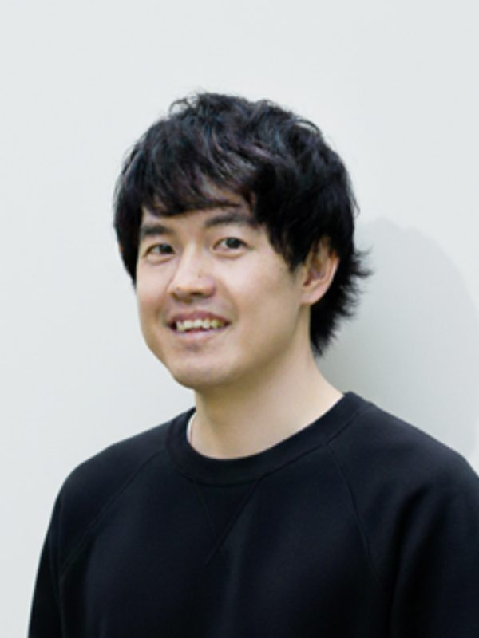
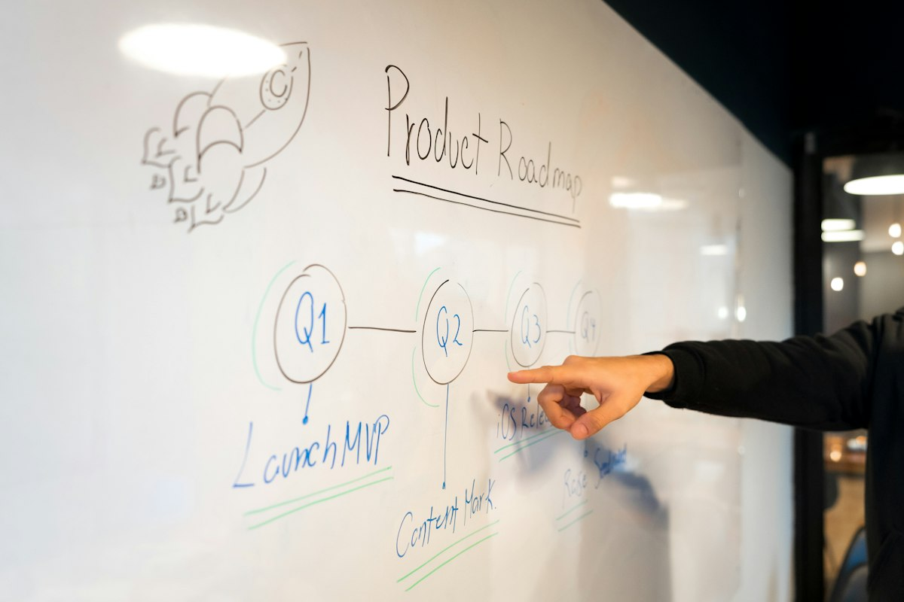

Board Member 01代表取締役
武井 遼太郎Ryotaro Takei
株式会社リクルート出身
- 300社を超える企業のHRコンサルティングと事業開発
- AIを活用したHR Tech事業
- ベンチャー企業のCOO・CHROを経て、上場企業へ事業を売却


JILのコンセプト
新規事業の立ち上げに、最後までコミットする。
コンサルでも、開発会社でも、営業・マーケ会社でもなく。
描いて終わり、つくって終わりにしない。
事業が立ち上がり、伸びるまで、
ひとつのチームとして伴走します。
JILの事業開発の特徴
Strategy戦略
役員が携わってきた事業審査の数
審査する側の目線で、筋の良い事業と、やめるべき事業を見極めます。
Development開発
立ち上げてきた新規サービスの数
設計して渡すだけでなく、試作から本番のプロダクト・ソリューションまで。
Execution実行
事業を立ち上げ、伸ばすところまで
つくって終わりにせず、マーケティング・営業・CS・業務設計まで、事業が回る仕組みを。
コンサルタント
Board Member 01代表取締役
株式会社リクルート出身

Board Member 02取締役
株式会社リクルート出身
Board Member 03監査役
プロアクト法律事務所出身
And More
事業開発・リサーチ・PMなど、専門の違うメンバーが一緒に伴走します。
事業づくりの流れ

Step 010→1
戦略・ビジネスモデル設計／伴走
Step 020→1
事業化検証の伴走／インキュベート

Step 031→10
プロダクト・ソリューションスキームの開発
Step 041→10
リリース後の設計と人材のアサイン
Foundation ／ All Steps
4つのステップ全体を支え、事業が生まれ続ける組織へ広げます。
事業開発×AI
新規事業は、どれだけ早く、多く試せるかが重要です。
JILの人員は、事業開発のプロセスに生成AIを活用することで、
他社に無い価値提供を実現します。
例：試作画面を、翌日に。
打ち合わせのアイデアを翌日には触れる形にし、すぐ顧客に当てます。
例：LP・広告を50パターンで検証。
訴求や見せ方を大量に用意し、反応の良いものを数字で選びます。
例：競合・市場を数百社規模で調査。
人手では追い切れない範囲まで調べ、見落としを減らします。
例：問い合わせ対応を、自動で。
立ち上げた後の業務をAIで仕組みにし、少ない人数でも事業を回せるようにします。
※ 事例は支援内容の一例です。期間や数量は案件によって異なります。